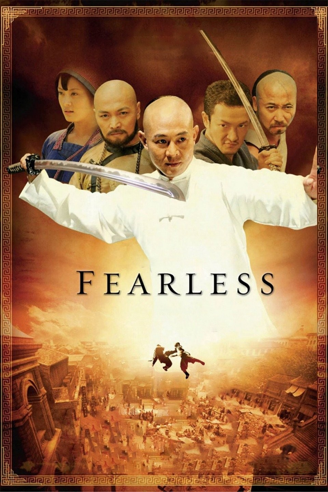
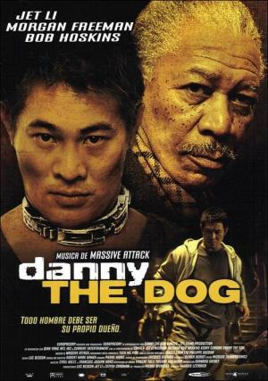
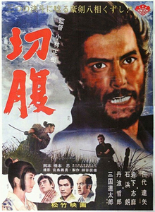

Enter the Dragon (1973)
Overview
Bruce Lee infiltrates a crime lord's island tournament, delivering electrifying fights and raw charisma. A genre-defining masterpiece, though the plot's simple.
Showcasing martial arts movies I've watched, rated by color. Explore classic kung fu, modern martial arts, action-comedy, and historical wuxia films.
Iconic films from the golden age of Hong Kong martial arts, emphasizing traditional techniques and choreography.
Bruce Lee infiltrates a crime lord's island tournament, delivering electrifying fights and raw charisma. A genre-defining masterpiece, though the plot's simple.

A young Jackie Chan masters a quirky fighting style with boozy flair. Playful and inventive, it's a kung fu classic with heart.

Bruce Lee avenges his master in a fiery tale of nationalism and vengeance. Intense fights, but the story leans on melodrama.

Bruce Lee faces off in Rome, culminating in an iconic Colosseum showdown. Raw and thrilling, though the pacing drags at times.

Bruce Lee's breakout sees him smashing a crime ring. Gritty action, but the story's thin and dated.

A mute monk trains to face wooden dummies and foes. Jackie's early work shines, but the plot's bare-bones.

Jackie Chan learns a unique style to fend off rivals. Fun and fluid choreography, though the story's predictable.

Jackie Chan hunts a fugitive with acrobatic flair. Energetic fights, but the narrative's a bit sloppy.

Bruce Lee battles up a tower, but posthumous edits dilute his magic. Iconic yellow suit, weak story.

A cobbled-together sequel using Lee's leftovers. Some decent fights, but it's a shameless cash grab.

A monk wields sticks in a revenge tale. Solid fights, but the low-budget story lacks punch.

Rival fighters team up against a villain. Decent action, but generic plot and dated production hold it back.

A martial artist faces deadly trials. Obscure and low-budget, with fights that barely spark.

Shaolin monks protect a sacred relic. Routine fights and a thin story make it forgettable.

A young fighter seeks vengeance. Standard kung fu fare with passable action but little else.

Jackie Chan in a convoluted revenge plot. Some creative fights, but the melodrama drags it down.
Contemporary takes on martial arts, often blending traditional styles with modern storytelling.

A Wing Chun master defends honor during Japan's invasion. Elegant fights and Donnie Yen's gravitas make it a modern classic.

A goofy wannabe gangster unleashes wild martial arts chaos. Stephen Chow's blend of slapstick and stunning fights is pure genius.

Jet Li's Huo Yuanjia rises as a martial arts legend. Stirring fights and patriotism, though the drama's a bit heavy.

Jet Li remakes Fist of Fury with slick fights and vengeance. Sharp choreography, but the story's a retread.

Ip Man faces colonial foes and rival masters. Great action, but the nationalism leans heavy.

Jackie Chan and Jet Li team up in a mythical quest. Fun fights, but the Westernized plot feels forced.

A masked hero fights corruption with kung fu flair. Solid action, but the story's a bit rote.

Ip Man battles gangsters and a boxer. Strong fights, but the family drama feels tacked on.

A martial artist hunts a killer targeting fighters. Gritty action, but the plot's a standard thriller.

Donnie Yen revisits a Bruce Lee hero in wartime. Stylish fights, but the story's a patriotic rehash.

Keanu Reeves directs a tai chi fighter's descent into underground bouts. Sleek action, but the story's thin.

A Wing Chun master faces triads and foreigners. Decent fights, but it lacks Ip Man's soul.

A warrior seeks revenge after betrayal. Flashy fights, but the overblown plot dilutes the impact.

Jackie Chan hunts artifacts with martial arts flair. Fun but formulaic, it's a lesser entry in his catalog.

Ip Man takes on America's racists. Action's solid, but the series ends with a tired, preachy note.

Jet Li protects his son in a period brawler. Decent fights, but the melodrama and pacing sag.

A prequel with Ip Man as a cop. Lackluster fights and a generic story make it a weak spinoff.
Films blending martial arts with humor, often featuring Jackie Chan's signature stunts.

Jackie Chan and Chris Tucker's buddy-cop chaos delivers laughs and slick fights. A cultural gem, though the plot's thin.

Stephen Chow's monks use kung fu to dominate soccer. Absurdly funny and visually wild, it's a genre-bending riot.

Jackie Chan hunts treasure with death-defying stunts. High-energy fun, but the plot's a chaotic afterthought.

Jackie Chan battles pirates and corruption with acrobatic brilliance. Stunts dazzle, but the story's a bit messy.

Jackie Chan fights New York gangs with wild stunts. Pure fun, though the dubbed plot's gloriously silly.

Chan and Tucker bicker through another crime caper. Fun chemistry and fights, but it's a familiar sequel.

A parody dubbing old kung fu footage with absurd humor. Niche and ridiculous, it's a cult hit for some.

Chan and Tucker chase triads in Paris. The charm's still there, but the formula's wearing thin.

Jackie Chan gains supernatural powers via a mystical artifact. Fun stunts, but the fantasy plot's a mess.

Jackie Chan's suit grants superpowers in a spy caper. Goofy fun, but the gimmick outshines the fights.

Jackie Chan plays twins in a chaotic comedy. Decent stunts, but the slapstick plot's a bit dated.

Chris Farley's bumbling ninja stumbles through a goofy plot. Silly laughs, but the martial arts are a joke.
Martial arts films with Western leads or heavy Western influence, often blending with action or drama.

A Westerner learns samurai ways in a clash of cultures. Epic and respectful, though it romanticizes history.

A teen learns karate and life lessons from a wise mentor. Nostalgic and heartfelt, though a bit formulaic.

A kung fu dreamer seeks "the glow" in a funky blaxploitation tribute. Cheesy charm and solid fights make it a cult hit.

A new kid trains under martial arts masters to face personal and competitive challenges. Solid choreography with a fresh cast, but it leans heavily on franchise nostalgia.

Jet Li fights corrupt cops in Paris. Brutal action, but the gritty plot's a bit generic.

Jet Li's in a gang war with a romantic twist. Cool fights, but the story's a cliché-ridden slog.

Daniel and Miyagi face foes in Okinawa. Decent action, but it leans hard on the original's formula.

Jet Li's a caged fighter finding humanity. Raw action and heart, but the drama's overly sentimental.

A kid learns kung fu in China with Jackie Chan. Solid remake, but it lacks the original's charm.

Miyagi trains a new student in a tired sequel. Some heart, but the spark's gone.

Daniel faces a vengeful foe in a weak sequel. Forced drama and repetitive fights dim the legacy.
Martial arts films focusing on stealth, ninjas, or assassins with intense combat.

A rogue ninja battles his clan with bloody flair. Gory action thrills, but the story's a shallow cut.

Female assassins fight with style in a sleazy thriller. Decent action, but the exploitative plot grates.

Ninjas clash in a low-budget spectacle. Campy fights, but the story's a disjointed mess.
Films showcasing Muay Thai and other Thai fighting styles with intense, raw action.

Tony Jaa hunts a stolen relic with jaw-dropping Muay Thai. Raw and relentless, though the story's basic.

Tony Jaa's warrior seeks revenge in a period epic. Stunning fights, but the plot's a chaotic mess.

Tony Jaa chases stolen elephants with brutal Muay Thai. Insane action, but the story's a flimsy excuse.
Martial arts films with a focus on historical settings or wuxia's poetic, mythical combat.

Kurosawa's masterclass in samurai cinema. Seven warriors, one village, and every action movie owes it royalties.

A warrior protects a legendary sword in a wuxia sequel. Graceful fights, but it lacks the original's soul.

A powerful samurai drama about honor, hypocrisy, and revenge. A masterful critique of feudal codes with breathtaking cinematography and emotional depth.

Jet Li's cop fights triads to save his son. Emotional and action-packed, though the drama's a bit sappy.

Jet Li's monk masters tai chi in a wuxia tale. Lively fights, but the story's a bit overstretched.

Rival schools clash in a wuxia showdown. Solid choreography, but the plot's a standard feud.
Lighthearted martial arts films aimed at younger audiences or with a playful tone.

Kid ninjas fight bumbling crooks. Nostalgic kid fun, but the action and humor are dated.

The ninja kids head to Japan for a dagger quest. Goofy but weaker than the first, it's pure 90s cheese.

Kid ninjas battle polluters. Slapstick and silly, it's a forgettable sequel for fans only.

The ninja kids face theme park terrorists. A low point for the series, it's lazy and uninspired.

Kid fighters take on crime in a low-budget romp. Charming for kids, but the action's weak and dated.
Miscellaneous martial arts films with unique styles or settings, often experimental or niche.

Jet Li's kung fu master fights in America. Decent action, but the cultural clash plot's clunky.

Jackie Chan's early cop role in a gritty crime flick. Raw but unpolished, it's for completists only.

Disabled fighters team up for revenge. Unique and bold, but the execution's rough and exploitative.

A female fighter takes on drug lords. Gritty for its time, but the low budget and weak plot show.

A fighter enters a deadly tournament. Obscure with some cool fights, but the story's a generic slog.

Jackie Chan's amnesiac agent fights for answers. Great stunts, but the convoluted plot drags.